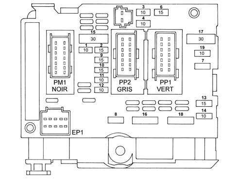
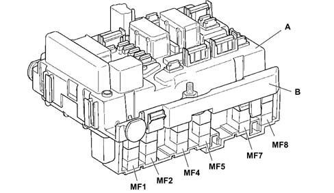
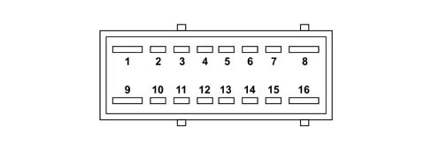
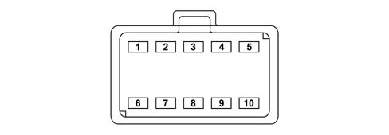

ENGINE COMPARTMENT NODE (NDVIM)
- Path
- Descriptions > 55 ELECTRICAL EQUIPMENT > 5505 INSTRUMENT/GAUGE ELECTRICAL CIRCUITS > 5505A MULTI-FUNCTION COMPONENTS > ENGINE COMPARTMENT NODE (NDVIM)
- Kind
- system description
- Applies to
- all engines; all production periods
- Interactive page
- https://sloeber94.github.io/elrnDB-fUlss/en/#/179000085
Applies to: all engines; all production periods
INTRODUCTION
The engine compartment node is located on the right side of the actual engine compartment (near the windscreen washer fluid reservoir).
NDVM FUNCTION
The NDVM has the task of distributing the power supplies via:
- Relays.
- Fuses.
- Mini fuses.
- Maxi fuses.
housed in it.
The NDVM comprises 2 modules (1 and 2) and guarantees the following functions:
- Distribution and protection of the main power supply lines and different functions
- Protection of the engine function power supply lines
- Communcation via the VAN CAR 1 network
- Interconnection
- Switching and protection of different functions: Main relay (powerlatch) and engine management power, fuel pump interruption, climate control vent, horn, main/dipped beam headlamps, fog lights, front/rear screen washers, headlamp washer, front windscreen wiper
- Rereading outputs
- Sensor signal recording.
The battery lead is fastened at module 1 of the NDVM (power module) which has the task of distributing the +BATT power supplies to the various components in the engine compartment (NDVM module 2, NFR, alternator) and in the passenger compartment (anti-theft devide, NBC).

Starting from the positive battery lead, module 1 guarantees:
- distribution and protection via the maxi fuse for the +BATT electrical power supplies to the components connected via the main wiring,
- the electrical power supply (+BAT Power) for module 2,
- the electrical interconnection between the battery lead and the alternator/starter motor/spark plugs connection.
Starting from the +BATT supplied by module 1 and the anti-theft enablement, module 2 guarantees the distribution, protection and interupption of the power supply (via relays) for the components connected by means of the main and engine wiring.

- A - module 1
- B - module 2
Distribution of the power supplies by fuse, with ignition at MAR for module 2:
The NDVM is supplied with the ignition ON.
The following components are supplied with the ignition ON, by fuse, by the NDVM:
- NCA, reversing switch/reversing light,
- (NCM, NFR),
- water in diesel sensor (for diesel engines),
- Preheating node (for diesel engines),
- air flow meter (for diesel engines),
- speed sensor (for petrol engines),
- gas discharge headlamps,
- Engine cooling fan assembly relay,
- engine coolant level (for diesel engines)
Distribution of power supplies by fuse for module 2:
- Additive Control Node (for diesel engines),
- Additive injector (for diesel engines),
Distribution of power supplies by relay and fuse for module 2:
- NCM,
- Left/right dipped headlamps,
- Left/right main beam headlamps,
- Fog lights,
- Front windscreen wiper,
- Front/rear windscreen washer pump,
- Headlamp washer pump,
- Signal,
- Additional vents,
- NCM actuators/sensors,
- NCM,
- Fuel pump,
- Air pump (for petrol engines),
- Ignition coil (for petrol engines),
- Injectors (for petrol engines),
- EGR solenoid valve (for petrol engines),
- Lambda sensor (for petrol engines),
- EGR solenoid valve,
- Turbo pressure regulator solenoid valve (waste gate) (for diesel engines)
- Diesel heater (for diesel engines),
Powerlatch and power electrical supply for engine management system:
In the case of an impact, the NBC requests the NDVM to cut off the fuel pump supply via the VAN CAR network.
The NDVM cuts off the "power activator" electrical supply for the fuel pump.
Operating procedure
There are 4 operating modes for the NDVM electronics:
- "system inactive or standy" mode: with +15 or +VAN power supplies below 5.5 V.
- powerlatch mode: +15 and +VAN power supplies below 5.5V and the main relay controlled by the engine management control unit.
- "system reactivated" mode: all the functions are active. Effective communication on the VAN multiplex network.
- emergency mode if there is no VAN communication.
PROTECTION THROUGH NDVM MODULE 1 FUSES
The table below illustrates the specifications of the maxi fuses in the NDVM:
Petrol versions
ABS | ABS | ESP | ESP | |
|---|---|---|---|---|
Maxi fuse | Function | Amperage | Function | Amperage |
MF1 | Second speed fan | 50A | Second speed fan | 50A |
MF2 | ABS | 60A | ESP | 50A |
MF3 | ESP solenoid valve | 30A | ||
MF4 | NBC1 | 60A | NBC1 | 60A |
MF5 | NBC2 | 70A | NBC2 | 70A |
MF6 | First speed fan | 30A | First speed fan | 30A |
MF7 | Anti-theft device | 40A | Anti-theft device | 40A |
MF8 | Climate control | 50A | Climate control | 50A |
Diesel versions
ABS | ABS | ESP | ESP | |
|---|---|---|---|---|
Maxi fuse | Function | Amperage | Function | Amperage |
MF1 | Second speed fan | 50A | Second speed fan | 50A |
MF2 | ABR | 60A | ABR | 60A |
MF3 | BURNER | 30A | BURNER | 30A |
MF4 | NBC1 | 60A | NBC1 | 60A |
MF5 | NBC2 | 70A | NBC2 | 70A |
MF6 | First speed fan | 30A | First speed fan | 60A |
MF7 | Anti-theft device | 40A | Anti-theft device | 40A |
MF8 | Climate control | 50A | Climate control | 50A |
NDVM MODULE 2 PROTECTION
Moduel 2 of the NDVM:
- establishes the electrical supply, via the powerlatch relay (RL1), for the engine management system if the following conditions occur: +30 power supply present, operation of powerlatch relay via engine management control unit supplied, in the first place, by +15 NDVM
- establishes the electrical supply, via the power relay (RL2), for the sensors and activators (including the fuel pump) for the enigne management system if the following conditions occur: +30 power supply present, +VAN CAR or +15 supply present, operation of powerlatch relay by means of engine management control unit, operation of power relay by means of engine management control unit, impact information.
establishes the electrical supply, via the power relay (RL2), for the sensors and activators (including the fuel pump) for the enigne management system if the following conditions occur: +30 power supply present, +VAN CAR or +15 supply present, operation of powerlatch relay by means of engine management control unit, operation of power relay by means of engine management control unit, impact information.
Module 2 also guarantees protection if the battery polarity is reversed.
FUSES | Amperage | Function |
|---|---|---|
F1 | 10A | Reversing lights |
Gas discharge headlamps, | ||
Engine cooling fan relay control | ||
Engine coolant level (diesel) | ||
Heater plugs node (diesel), | ||
Air flow meter (diesel) | ||
Water presence sensor (diesel) | ||
Vehicle speed sensor (diesel), | ||
F2 | 15A | Fuel pump |
EV EGR (diesel) | ||
EV turbo pressure regulation (waste gate valve) (diesel) | ||
F3 | 10A | ABS/ESP control unit |
F4 | 10A | NCA control unit |
Starting relay control | ||
Shift lock relay control | ||
NCA shift lock | ||
Engine management control unit | ||
F5 | 10A | Additive injector (diesel) |
NAD (diesel) | ||
F6 | 15A | Fog light |
F7 | 20A | Headlamp washer pump |
F8 | 20A | Main relay NCM |
Turbo pressure regulation solenoid valve (waste gate valve) (diesel) | ||
F9 | 15A | Left dipped headlamp |
Front headlamp alignment adjustment sensor | ||
Rear lamps alignment adjustment sensor | ||
F10 | 15 | Right dipped headlamp |
F11 | 10 | Left main beam headlamp |
F12 | 10 | Right main beam headlamp |
F13 | 15A | Horn |
F14 | 10A | Front windscreen washer pump |
F15 | 30A | EGR throttle valve solenoid (diesel0 |
Swirl solenoid valve (diesel0 | ||
Air heater solenoid valve (diesel 2.2 JTD) | ||
Diesel injection pump solenoid valve (diesel) | ||
Downstream Lambda sensor heating Rg A (petrol) | ||
Upstream Lambda sensor heating Reg. A (petrol) | ||
Diesel heater (diesel) | ||
Injectors (petrol) | ||
EGR solenoid valve (diesel 2.0 JTD) | ||
Ignition coil (petrol) | ||
Throttle valve node heater (petrol) | ||
Canister filer scavenging solenoid valve (petrol) | ||
F16 | 30A | Air pump (petrol) |
F17 | 30A | Front windscreen wiper |
F18 | 40A | Additional vents (climate control system) |
The NDVM does not guarantee sufficient protection for the additional vents, a lower capacity fuse will be added to the BMF 12 connection bridge at the side of the battery).
Retransmitted and protected power output table
Ouputs from contact relay + Fuse:
FUNCTIONS | Relay no. and fuse | Flow rate | with | Current Type |
|---|---|---|---|---|
ENGINE MANAGEMENT POWER LATCH RELAY | R1 (F1) | 20 A | +BAT_P | 16 A |
ENGINE MANAGEMENT POWER RELAY | R2 (F2+F3) | 30A+15A | +BAT_P | 23 A +15 A |
AIR PUMP RELAY | R13 (F14) | 30 A | +BAT_P | 135 A -23 A |
* CLIMATE CONTROL VENT RELAY | R3 (F4) | 40 A | +BAT_P | 28 A -18 A |
HEADLAMP WASHER PUMP RELAY | R12 (F13) | 20 A | +BAT_P | 55 A -15 A |
FOG LIGHTS RELAY | R11 (F12) | 15 A | +BAT_P | 10 A |
MAIN BEAM HEADLAMPS RELAY | R6 (F8+F9) | 10A X 2 | +BAT_P | 10 A |
* DIPPED HEADLAMPS RELAY | R5 (F6+F7) | 15A X 2 | +BAT_P | 10 A |
SIGNAL RELAY | R4 (F5) | 15 A | +BAT_P | 10 A |
Outputs from reversal relay:
FUNCTIONS | Relay no. and fuse | Flow rate | with | Current |
|---|---|---|---|---|
FRONT WINDSCREEN WASHER PUMP RELAY | R9 (F11) | 10 A | +BAT_P | 5 A |
REARSCREEN WASHER PUMP RELAY | R10 (F11) | 10 A | +BAT_P | 5 A |
FRONT WINDSCREEN WIPER CONTROL RELAY | R7 (F10) | 30A | +BAT_P | 10 A |
FRONT WINDSCREEN WIPER RELAY PV GV | R8 (F10) | 30A | +BAT_P | 15 A |
CONNECTIONS
The following 5 connectors and a main supply terminal are present at the NDVM:
- 8 mm diameter flat terminal on a threaded stud (+BAT_P) +BATTERY supply terminal connected to the battery lead
- Connector B: PM1 (power connector to engine cable loom), 16-way, black
- Connector C PP1 (power connector to main cable loom), 16-way, green
- Connector D: PP2 (power connector to main cable loom), 16-way, grey
- Connector F: BAT (BATTERY connector connected to the battery lead), 2-way, black
- Connector E: EP1 (power connector to main cable loom), 10-way, black
The main cable loom is connected to the NDVM via connectors PP1, PP2, EP1.
The engine cable loom is connected to the NDVM via connector PM1.
The battery cable loom is connected to the NDVM via the 8 mm terminal.
Connector B (PM1)
2.8 mm tabs on ways 1, 8, 9 and 16.
1.5 mm tabs on the other ways.

Pin | Function |
|---|---|
1 | Lambda sensor |
2 | +15 reverse |
3 | Power relay control NCM |
4 | Oil temperature |
5 | Oil sensor earth |
6 | Oil level |
7 | Climate control compressor |
8 | Power latch relay |
9 | Ignition coils |
10 | Injectors |
11 | Oil pressure |
12 | Water in diesel sensor |
13 | Power latch relay control |
14 | Speed sensor |
15 | data not available |
16 | data not available |
Connector C (PP1)
2.8 mm tabs on ways 1, 8, 9 and 16.
1.5 mm tabs on the other ways.
Pin | Function |
|---|---|
1 | Front windscreen wiper |
2 | FAP |
3 | +30 Front windscreen wiper |
4 | front windscreen wiper relay control |
5 | reserve |
6 | data not available |
7 | Horn 2 |
8 | Climate control |
9 | Front windscreen wiper |
10 | Fog light |
11 | Rearscreen washer |
12 | +15 NCM |
13 | Earth |
14 | Front windscreen washer |
15 | Horn 1 |
16 | Climate control |
Connector D (PP2)
2.8 mm tabs on ways 1, 8, 9 and 16.
1.5 mm tabs on the other ways
Pin | Function |
|---|---|
1 | data not available |
2 | data not available |
3 | +15 NFR |
4 | +15 NCA |
5 | Earth |
6 | Right main beam headlamp |
7 | Left main beam headlamp |
8 | Right dipped headlamp |
9 | +15 |
10 | data not available |
11 | Fuel pump |
12 | Canister solenoid valve |
13 | Climate control compressor |
14 | Power latch relay |
15 | Left dipped headlamp |
16 | Air pump |
Distribution of connector E (EP1) stems
1.5 mm tabs on ways 1 - 10

Pin | Function |
|---|---|
1 | Van Car1 Data |
2 | Speed sensor |
3 | Oil sensor earth |
4 | Oil temperature |
5 | Van Car1 Data B |
6 | Not connected |
7 | Not connected |
8 | Earth |
9 | +Van Car1 |
10 | Oil level |
Connector F (BAT)
2.8 mm tabs on ways 1 -2
Pin | Function |
|---|---|
1 | data not available |
2 | data not available |
DIAGNOSTICS
If VAN communication is lost and if there is a fault inside the NCM, a control device is fitted.
If there is a fault inside the main control circuit for module 2 of the NDVM, a control device guarantees that the dipped headlamps are either switched on or stay on whilst the engine is running.
The NDVM fault diagnosis takes place via the NBC by means of the VAN CAR network.